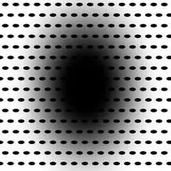
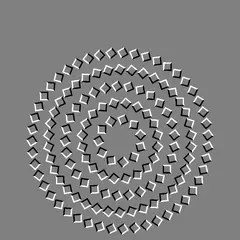
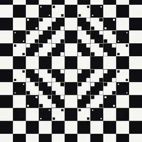
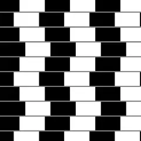
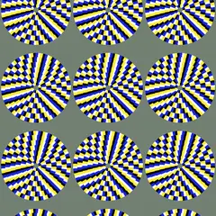
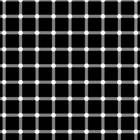
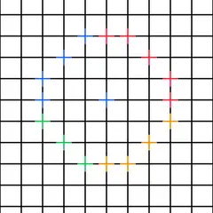
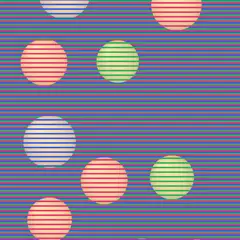
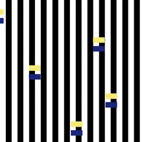
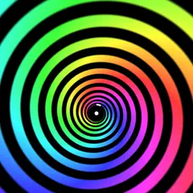

TRICK ROOM
目をだますトリック作品の部屋。タップすると作品が開く。「傾き」の印がある作品は、左上のボタンを押すとスマホの傾きで動かせる。

01
DARK PULL
止まった穴が、ひろがって迫ってくる
タップで穴が移る。押さえると止まる

02傾き
TWIN SPIN
近づくと、輪がたがい違いに回る
押さえると回らなくなる。輪をタップで逆回り

03傾き
SOFT FLOOR
まっすぐな床が、ゆがんで見える
指を置くと平らに戻る。タップで中心が移る

04傾き
LEANING LINES
平行な線が、かたむいて見える
横になぞるとタイルがずれる。押さえると平行だと分かる

05
SLOW DRIFT
止まった輪が、じわりと回る
輪をタップで逆回り。押さえると止まる

06傾き
SPARK GRID
無い黒い点が、またたく
指を置くと線が消える。タップで格子が回る

07
NEON KNOT
描いていない光の円が、ともる
交点をタップ、またはなぞって光をともす

08傾き
SAME COLOR
玉の色は、前を通る縞が決める
指を置くと同じ色だと分かる。玉をタップで色が変わる

09傾き
SAME SPEED
同じ速さなのに、交互に歩く
押さえると縞が消える。バーをタップで順番が逆

10
STILL MOVING
止まった絵が、目の中で動きだす
渦を30秒見つめる。タップで渦の向きが変わる
戻るときはブラウザの「戻る」で。ART PLAYGROUND のギャラリーへ